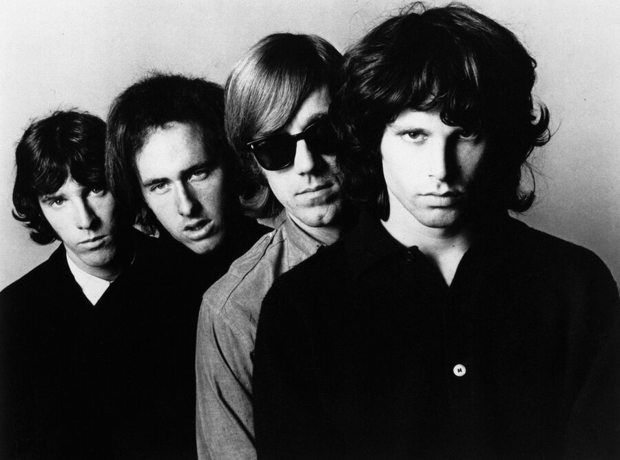

The Doors Light My Fire began as guitarist Robby Krieger's very first finished song.
Jim Morrison had challenged him to write something universal, and Krieger answered with a single word, fire.

Table of Contents
- Writing The Doors Light My Fire
- Recording and Releasing the Song
- Chart Success and Cultural Impact
- FAQ
Writing The Doors Light My Fire
By 1966 the band played five sets a night at the Fog on Sunset Boulevard for $40.
Morrison told Krieger to start writing something timeless, something that would not date fast.
Krieger thought about the four classical elements, earth, air, water and fire.
He picked fire, partly inspired by the Rolling Stones song "Play with Fire."
He brought finished verses to the very next rehearsal.
Morrison's Funeral Pyre Verse
Morrison wrote the song's second verse, including a line about a "funeral pyre."
Krieger initially thought that image was too dark.
Morrison talked him into keeping it.
Morrison also rewrote the closing line to "try to set the night on fire," a phrase from his own high school notebooks.
Ray Manzarek built the famous organ intro, drawing on composer Johann Sebastian Bach.
John Densmore pushed the rhythm toward a rolling Latin feel.
Recording and Releasing the Song
The band recorded the song at Sunset Sound Recorders in September 1966.
Sessions ran September 19, 20 and 23, with producer Paul Rothchild.
Session player Larry Knechtel overdubbed a Fender bass line, later becoming famous as part of the Wrecking Crew.
His bass doubled Manzarek's own keyboard bass part.
The finished track ran 7 minutes and 6 seconds.
It opened side one of the band's self-titled debut album, released January 4, 1967 on Elektra Records.
From Seven Minutes to Under Three
Elektra founder Jac Holzman refused at first to cut the song down for radio.
FM stations simply played the full seven minute album cut instead.
Rothchild eventually trimmed the solos for a 2 minute 52 second edit.
That single arrived April 24, 1967, backed with "The Crystal Ship."
It became Elektra Records' first number one single.
- Jim Morrison, lead vocals
- Robby Krieger, guitar
- Ray Manzarek, organ and keyboard bass
- John Densmore, drums
- Larry Knechtel, uncredited session bass overdub
Chart Success and Cultural Impact
"Light My Fire" hit number one on the Billboard Hot 100 the week of July 29, 1967.
It held the top spot for three weeks.
That success made a September 17, 1967 booking on The Ed Sullivan Show a tense one.
Producer Bob Precht asked the band to soften the line "girl, we couldn't get much higher."
Morrison rehearsed the change, then sang the original lyric live anyway.
Sullivan reportedly would not shake his hand afterward, and the band was never asked back.
| Country | Chart | Peak position |
|---|---|---|
| United States | Billboard Hot 100 | No. 1 (three weeks) |
| Canada | RPM | No. 2 |
| New Zealand | National chart | No. 7 |
| Australia | National chart | No. 16 |
| United Kingdom | UK Singles Chart | No. 49 |
Cover Versions and Later Legacy
Jose Feliciano released a Latin-tinged cover in 1968.
It reached number 3 on the Hot 100 and number 1 in Canada.
Feliciano won the 1969 Grammy for Best Contemporary Pop Vocal Performance, Male, plus Best New Artist.
British singer Will Young later topped the UK chart with his own cover in 2002.
Buick offered the band $75,000 in 1968 for a jingle built on the song's hook.
The other three agreed while Morrison was traveling.
Morrison killed the deal the moment he found out.
The song entered the Grammy Hall of Fame in 1998.
Rolling Stone has ranked it among rock's greatest songs ever since.
FAQ
Who wrote Light My Fire?
Robby Krieger wrote it as his first completed song, after Jim Morrison challenged him to write something universal.
All four band members shared the composer credit.
Why did The Ed Sullivan Show ban The Doors?
Producer Bob Precht wanted a lyric softened for the September 17, 1967 broadcast.
Jim Morrison sang the original line anyway, and the band was never invited back.
How long is the original version of Light My Fire?
The album track runs 7 minutes and 6 seconds.
Producer Paul Rothchild cut it to 2 minutes and 52 seconds for the single.
Did Jose Feliciano's cover win a Grammy?
Yes, his 1968 cover reached number 3 on the Billboard Hot 100.
It won him the 1969 Grammy for Best Contemporary Pop Vocal Performance, Male, plus Best New Artist.
Did Buick almost turn the song into a commercial?
Almost, Buick offered $75,000 in 1968 for a jingle built on the song's hook.
Morrison killed the deal once he learned about it.
A song built around one word from a list of four elements ended up defining an entire band.
"Light My Fire" carried The Doors out of the Sunset Strip clubs and into the front rank of psychedelic rock.
Acts like The Who pushed rock toward that same experimental edge, a history covered in full on Wikipedia's entry on the song.
The Doors Light My Fire still opens most conversations about the band's legacy.
Back to the 1960smusic.net homepage to explore every genre of the decade.